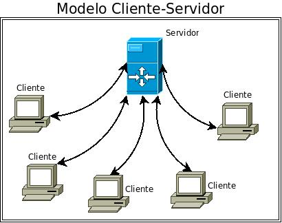

Programación de aplicaciones con sockets
Socket designa un concepto abstracto por el cual dos procesos (posiblemente situados en computadoras distintas) pueden intercambiar cualquier flujo de datos, generalmente de manera fiable y ordenada. Además es una estructura de datos que permite que dos maquinas se comuniquen entre ellas.
Los sockets de Internet constituyen el mecanismo para la entrega de paquetes de datos provenientes de la tarjeta de red a los procesos o hilos apropiados. Un socket queda definido por un par de direcciones IP local y remota, un protocolo de transporte y un par de números de puerto local y remoto
Para que dos procesos puedan comunicarse entre sí es necesario que se cumplan ciertos requisitos:
- Que un proceso sea capaz de localizar al otro.
- Que ambos procesos sean capaces de intercambiarse cualquier secuencia de octetos, es decir, datos
relevantes
a su finalidad.
Para ello son necesarios los dos recursos que originan el concepto de socket:
- Un par de direcciones del protocolo de red (dirección IP, si se utiliza el protocolo TCP/IP), que
identifican la computadora de origen y la remota.
- Un par de números de puerto, que identifican a un programa dentro de cada computadora.
Los sockets permiten implementar una arquitectura cliente-servidor. La comunicación debe ser iniciada por
uno de los procesos que se denomina programa "cliente". El segundo proceso espera a que otro inicie la
comunicación, por este motivo se denomina programa "servidor".
Un socket es un proceso o hilo existente en la máquina cliente y en la máquina servidora, que sirve en
última instancia para que el programa servidor y el cliente lean y escriban la información. Esta información
será la transmitida por las diferentes capas de red.
A la hora de programar con sockets, si nos centramos en la parte de comunicaciones, la forma general de implementar un cliente será:
- 1- Crear un objeto de la clase Socket, indicando host y puerto donde corre el servicio.
- 2- Obtener las referencias al stream de entrada y al de salida al socket.
- 3- Leer desde y escribir en el stream de acuerdo al protocolo del servicio.
- 4- Cerrar los streams.
- 5- Cerrar sockets
A continuación, una primera parte de un video tutorial para programar con sockets en Java